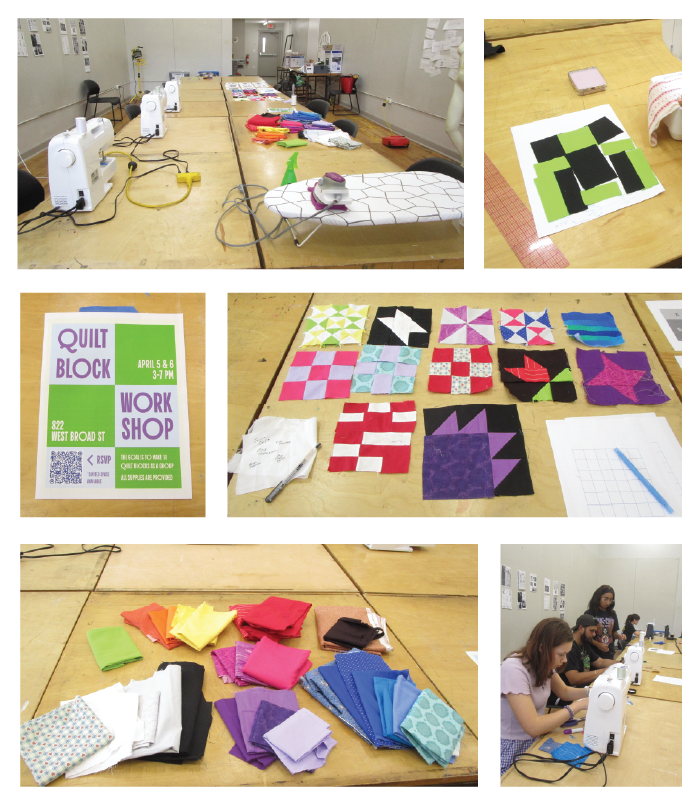
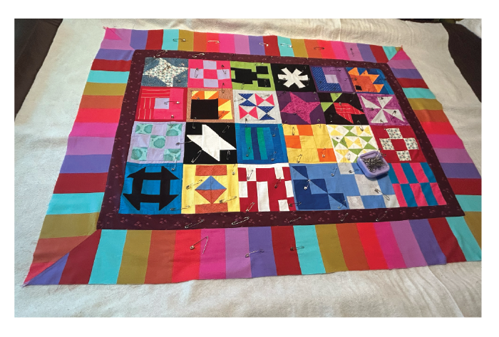
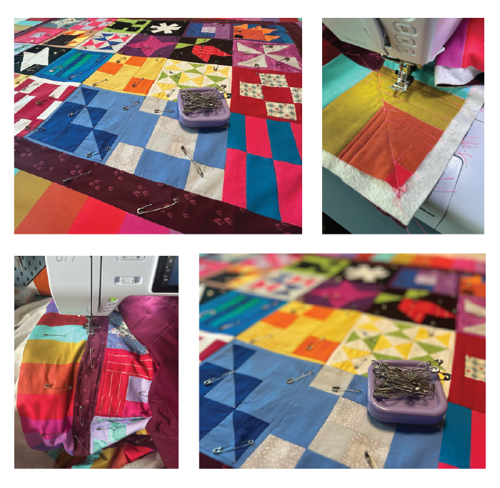

During four Quilt Block Workshops, 17 people made quilt blocks that were used to make the TICATBOC quilt. The workshops were free and meant solely to teach those who were interested about making quilt blocks.
WORKSHOP PROCESS PHOTOS

I then assembled the blocks together and added two borders for extra length

Followed by basting and quilting

Finally the quilt was done!!
After allowing everyone to cut the various fabrics in any way they wanted for their quilt blocks, I had lots of excess scraps..